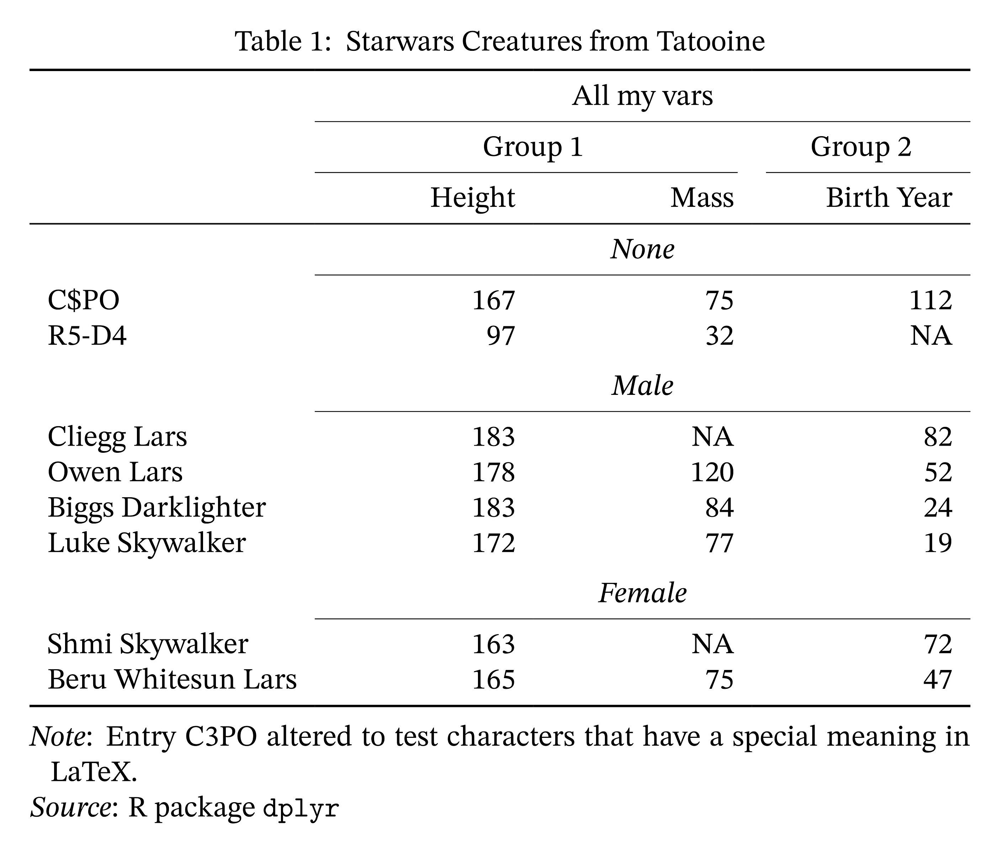

This package lets you typeset R objects such as dataframes in LaTeX using tabularray. tabularray is a LaTeX package developed by Jianrui Lyu that provides a modern and unified alternative to the established space of table-generating packages in LaTeX. This implementation in R is inspired by the R package gt. That means we construct a table iteratively, adding formatting by chaining functions together. Unlike gt, however, this package focuses on LaTeX output. It intends to maximize access the functionality of the (LaTeX) tabularray package while offering convenience functions for the most common formatting tasks.
Installation
You can install the development version of tabularray from GitHub with:
# install.packages("devtools")
devtools::install_github("turbanisch/tabularray")Examples
In the example below, we format the same dataset twice to demonstrate how tabularray works out of the box and with more fine-tuning applied.
library(dplyr)
library(tabularray)
df <- starwars |>
filter(homeworld == "Tatooine", !name %in% c("Anakin Skywalker", "Darth Vader")) |>
select(name, height, mass, sex, birth_year) |>
arrange(desc(birth_year))
df[1, 1] <- "C$PO"Table with markup
df |>
mutate(sex = stringr::str_to_title(sex)) |>
group_by(sex) |>
tblr(type = "float", caption = "Starwars Creatures from Tatooine") |>
set_source_notes(
Note = "Entry C3PO altered to test characters that have a special meaning in LaTeX.",
Source = "R package \\texttt{dplyr}"
) |>
set_alignment(height:birth_year ~ "X[r]") |>
set_column_labels(
name = "",
height = "Height",
mass = "Mass",
birth_year = "Birth Year"
) |>
set_theme(row_group_style = "panel") |>
set_interface(width = "0.7\\linewidth") |>
set_column_spanner(
c(height, mass) ~ "Group 1",
birth_year ~ "Group 2"
) |>
set_column_spanner(!name ~ "All my vars")

Usage with Quarto and R Markdown
The tabularray package produces LaTeX code that you can copy and paste into your favorite LaTeX editor. However, it is designed to shine in combination with literate programming. Integration is seamless: just make sure to load the necessary LaTeX packages in your document.
In a Quarto document’s YAML metadata, please include
The tabularray_packages.sty file would then contain the dependencies listed below:
You do not need to modify any chunk options. knitr will automatically embed the LaTeX markup verbatim.
Alternatives
The popular table packages gt, kableExtra, and flextable do not target the tabularray LaTeX package. The one that does is tinytable — a feature-complete, actively developed package that offers several output formats and can address tabularray’s inner and outer specifications directly. This package predates tinytable and is, for most purposes, superseded by it.
tabularray may still hit a sweet spot if you want a small tool tailor-made for tabularray LaTeX output, with a tidyverse- and gt-inspired interface for the most common formatting tasks.